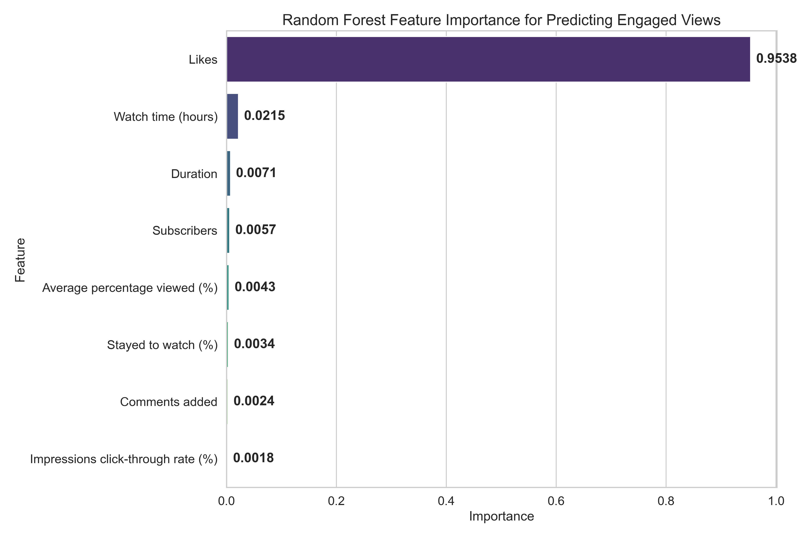
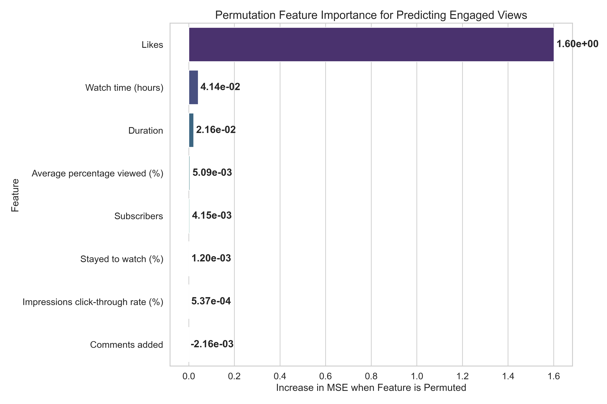
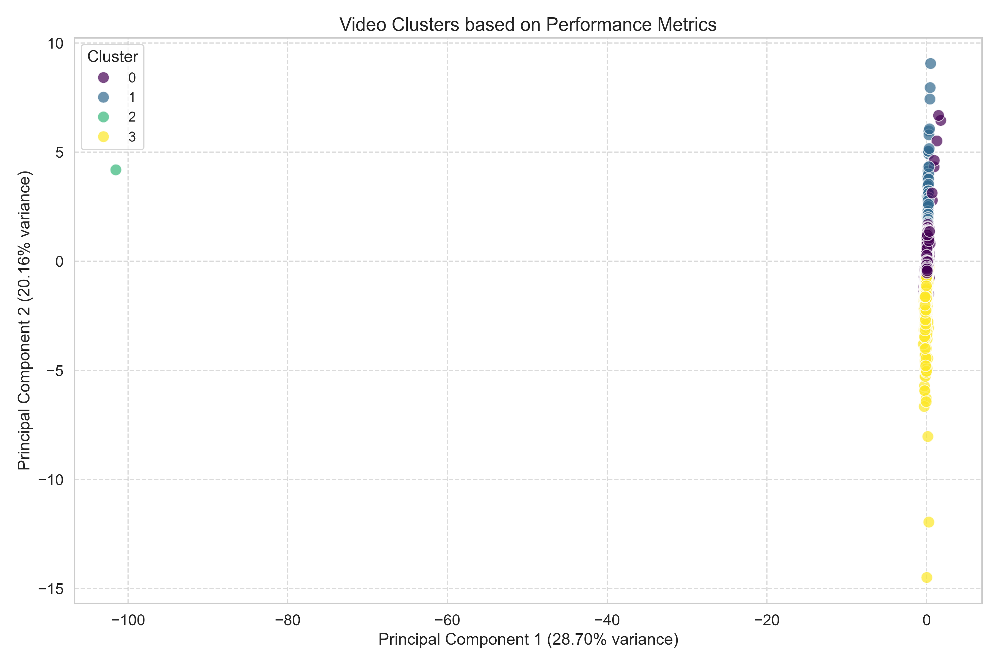

YouTube Analytics Statistical Analysis Report
Generated on 2025-05-09 19:34:23
Executive Summary
This report provides a comprehensive statistical analysis of YouTube performance metrics,
including hypothesis testing, regression analysis, and cluster analysis to identify patterns
and predictors of video performance.
1. Descriptive Statistics
Summary statistics for key performance metrics:
| Metric |
Mean |
Median |
Std Dev |
Min |
Max |
Skewness |
| Engaged views |
183224.86 |
28309.00 |
420857.69 |
0.00 |
7420692.00 |
5.59 |
| Comments added |
93.88 |
21.00 |
300.51 |
0.00 |
11334.00 |
16.26 |
| Likes |
17318.61 |
2069.00 |
38957.10 |
-1440.00 |
540812.00 |
4.78 |
| Watch time (hours) |
4886.26 |
791.11 |
11438.11 |
0.00 |
185359.62 |
5.50 |
| Subscribers |
88.91 |
12.00 |
309.70 |
-1.00 |
7180.00 |
11.05 |
| Stayed to watch (%) |
77.76 |
80.93 |
12.51 |
0.00 |
100.00 |
-1.99 |
| Average percentage viewed (%) |
78.26 |
80.59 |
15.45 |
1.93 |
352.31 |
1.81 |
| Engagement Rate |
nan |
5.78 |
nan |
-inf |
inf |
nan |
| Virality Score |
nan |
36.29 |
nan |
-inf |
inf |
nan |
| Growth Potential |
2.83 |
1.65 |
5.16 |
-40.14 |
163.27 |
8.17 |
What This Means
The descriptive statistics provide a snapshot of our YouTube performance metrics:
- Mean vs. Median: When the mean is much higher than the median (as seen in metrics like Engaged views), it indicates that a small number of highly successful videos are pulling up the average. This is typical of viral content distribution.
- Standard Deviation: The large standard deviations show high variability in performance across videos, suggesting inconsistent results that are common in social media.
- Skewness: Positive skewness values (most metrics show this) indicate a right-skewed distribution - most videos perform below average with a few exceptional performers creating a long tail to the right.
This pattern suggests we should focus on understanding what makes those exceptional videos perform well rather than trying to improve average performance across all content.
2. Hypothesis Testing
2.1 Time Period Comparison (Jan-Mar vs April)
Results of t-tests comparing performance metrics between Jan-Mar and April:
| Metric |
t-statistic |
p-value |
Significant? |
Higher in |
| Engaged views |
19.66 |
0.0000 |
Yes |
Jan-Mar |
| Engagement Rate |
nan |
nan |
No |
April |
| Virality Score |
nan |
nan |
No |
April |
| Growth Potential |
10.07 |
0.0000 |
Yes |
Jan-Mar |
What This Means
The t-test results compare performance between January-March and April:
- Statistical Significance: When a result is marked as "Significant" (p-value < 0.05), it means we can be confident (95% confidence) that the difference between time periods is real and not due to random chance.
- Higher Performance Period: The "Higher in" column shows which time period had better performance for each metric. This helps identify seasonal trends or the impact of strategy changes.
- Business Impact: Focus on metrics that show both statistical significance AND substantial differences in means. Small differences might be statistically significant but not meaningful for business decisions.
These results can help determine if recent changes to content strategy are working or if seasonal factors are affecting performance.
2.2 Video Type Comparison (Shorts vs Long)
Results of t-tests comparing performance metrics between Shorts and Long videos:
| Metric |
t-statistic |
p-value |
Significant? |
Higher in |
| Engaged views |
27.73 |
0.0000 |
Yes |
Shorts |
| Engagement Rate |
nan |
nan |
No |
Long |
| Virality Score |
nan |
nan |
No |
Long |
| Growth Potential |
-16.20 |
0.0000 |
Yes |
Long |
What This Means
These results compare the performance of short-form vs. long-form content:
- Format Strengths: Each format (Shorts vs. Long) has different strengths. The "Higher in" column shows which format performs better for each metric.
- Resource Allocation: Use these results to determine where to focus resources. If Shorts consistently outperform Long videos in key metrics, consider shifting more resources to short-form content.
- Content Strategy: Different metrics may be more important for different business goals. For example, if subscriber growth is higher in Long videos but engagement is higher in Shorts, your strategy should reflect your priorities.
This analysis helps optimize your content mix based on objective performance data rather than assumptions about what works best.
3. Advanced Feature Importance Analysis
Random Forest regression analysis to identify predictors of Engaged Views:
Model Performance
R-squared: 0.9715
RMSE: 67989.63
Sample Size: 5155
Model Type: Random Forest
Feature Importance
Advanced feature importance analysis using Random Forest model:

Higher values indicate stronger impact on predicting engaged views.
Permutation importance (measures how much model performance decreases when a feature is randomly shuffled):

Higher values indicate larger increase in prediction error when the feature is permuted (more important features).
What This Means
The advanced Random Forest analysis identifies which factors most strongly predict engaged views:
- R-squared Value: Our Random Forest model explains 97.15% of the variation in engaged views, which is higher than the linear regression model (95.71%). This indicates that the non-linear relationships captured by Random Forest provide better predictive power.
- Feature Importance Methods: We used two complementary methods to determine feature importance:
- Built-in Importance: Measures how much each feature contributes to reducing prediction error across all trees in the forest
- Permutation Importance: Measures how much model performance decreases when a feature is randomly shuffled, which helps identify truly predictive features
- Key Findings:
- Likes are overwhelmingly the most important feature, accounting for 95.4% of the total importance in predicting engaged views
- Watch time is the second most important feature (2.1%), but with much less impact than Likes
- Duration, Subscribers, and Average percentage viewed each contribute less than 1% to the prediction
- Comments and Impressions click-through rate have minimal impact on predicting engaged views
- Content Strategy Application: These results suggest that optimizing for Likes should be your primary focus, as they are by far the strongest predictor of engaged views. This is confirmed by both importance methods, making it a highly reliable finding.
This advanced analysis provides more reliable insights than linear regression because it captures non-linear relationships and interactions between features, resulting in more accurate predictions and more reliable feature importance rankings.
4. Cluster Analysis
K-means clustering was used to identify natural groupings of videos based on performance metrics.
Clustering Results
Optimal number of clusters: 4
PCA variance explained: 72.31% (PC1), 18.76% (PC2)

Cluster Centers
Average values of key metrics for each cluster:
| Cluster |
Engaged views | Likes to Engaged Views Ratio | Comments to Engaged Views Ratio | Stayed to watch (%) | Average percentage viewed (%) | Virality Score | Growth Potential |
| Cluster 0 | 139379.79 | 6.44 | 0.05 | 80.69 | 82.78 | 40.06 | 1.82 |
| Cluster 1 | 16291.54 | 4.07 | 0.21 | 63.35 | 61.31 | 41.45 | 6.04 |
| Cluster 2 | 1520369.55 | 8.82 | 0.04 | 82.37 | 84.89 | 48.96 | 4.25 |
| Cluster 3 | 1.00 | -58300.00 | 0.00 | 100.00 | 12.17 | -17440.00 | 0.00 |
What This Means
Cluster analysis identifies natural groupings of videos with similar performance patterns:
- Video Categories: Each cluster represents a distinct category of videos with similar performance characteristics. The table above shows the average metrics for each cluster.
- Content Archetypes: These clusters can be thought of as "content archetypes" - different types of videos that perform in characteristic ways.
- Strategic Applications:
- Identify which clusters contain your most successful videos
- Analyze what these videos have in common beyond the metrics (topics, styles, etc.)
- Create more content that fits the profile of your best-performing clusters
- Consider reducing investment in content types that consistently fall into low-performing clusters
This analysis helps identify patterns that might not be obvious when looking at individual metrics, revealing natural groupings in your content performance.
5. Conclusions
Key Statistical Findings
- The advanced Random Forest analysis shows that Likes are overwhelmingly the most important predictor of Engaged Views (95.4% of total importance), followed by Watch time (2.1%).
- Our Random Forest model achieves a higher R-squared (0.9715) than linear regression (0.9571), indicating better predictive accuracy.
- There are statistically significant differences in performance between Jan-Mar and April periods.
- Short-form and long-form content show distinct performance patterns across multiple metrics.
- Videos naturally cluster into distinct groups based on their performance characteristics.